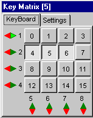
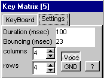

Matrix Keyboard 
The matrix keyboard can contain a maximum of 25 keys.
Within that limit any combination of rows and coluns can be made.
Multiple Keys can be generated.
The duration of the keypress can be set.
If bouncing is given a value other than 0, the key will be active for half the bouncing time, then it will be inactive during half the bouncing time and after that it will be active again for the rest of the duration time.
All matrix line are connected through a resistor with either Vpos or Ground.
